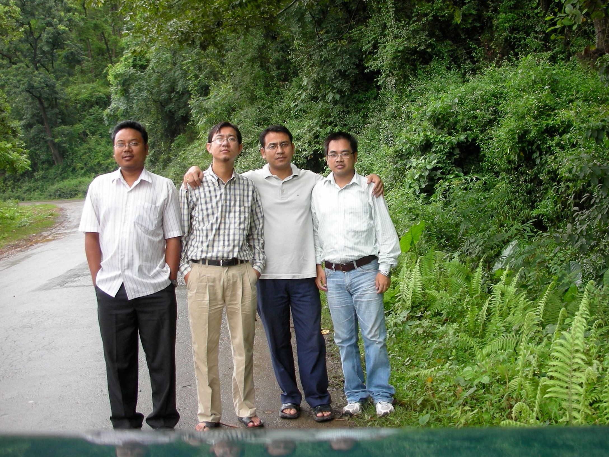

Many years ago, in 1986, I was late on the first day of my 4th-grade class. The teacher asked me to sit on an isolated extra bench, and that was when I met two brothers who share the same surname as mine. The younger one was more curious.
“I’m Oinam Brajeshwar.” “Oinam Binny.” That was when we both knew we would be good friends.
From that day, Binny and I started, nurtured, and cherished a life-long friendship.
We shared and did many things together in school -- dislike for a particular teacher to choosing favorites, to being punished together by the teachers. We used to prank other kids and made elaborate plans of mischiefs. His sarcasm and humor are subtle yet deep. Even teachers were not spared, especially on April Fools’ Day. I remember a day when we replaced sugar and added salt to the tea for almost all the teachers.
We shared similar taste in fun, food, and studies. Most of the times, we were in our own world, with our bare-minimum pocket money to last us through the class breaks. I remember eating the exact same snack from the same shop for weeks on before we decided to experiment. We were not the most adventurous but we had our fun and we were happy.
With time, he became one of my best friend whom I shared details of my life's stories without hesitation. I told him stories of my family, my misfortunes, and everything else about my life. Without ever making me feel pitied, he usually figured out ways to share things with me -- pencils, pens, notebooks, stickers, et al.
Amongst many other good friends, Binny and I spent almost our entire school-life together.
Binny left our home-town for further studies in 1993. We would meet up during the holidays. We remained good friends, and we kept to the few friends that we met along the way.
Binny married few years after me. He and his wife had a sweet girl. They were always happy and joyful. Our family always try to copy them and become happier like theirs.
Circumstances made fools of us. We could only meet up once a while, longing to get back to how things were once. We wanted to be free like kids all over again.
Few of us close friends were making plans, that once we retire, we would build a massive man-cave where we will chill-out our lives together.
Life is never going to be the same with you gone. I’ll, forever, cherish our friendship.
My dear friend, I’ll miss you for the remainder of my life and there is nothing that can fill this void.
Feb 3, 2019: Binny, his wife, and their daughter met with a fatal accident in Assam, India.
I wish we're the victim of the cruelest prank ever and that this is not happening. I’d still forgive them but I wish I can get my friend back.
